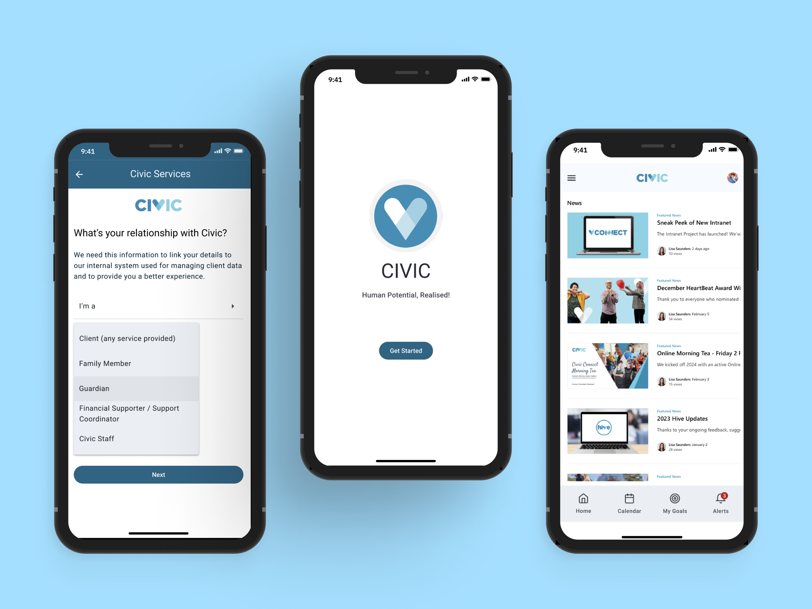

Civic Disability Services: Designing a customer portal focused on reducing lack of communication and enhancing customer experience
How to reduce lack of communication, enhance customer experience, and provide to customer control of chosen services?
Introduction
The project started focused on enhancing the Future of Civic's Program of Support (POS).
- Survey Focus: Identifying Opportunities for our 12-week Program of Support.
- Purpose: Reframe the program by addressing pain points and unlocking opportunities.
- Insights: A pathway to a more responsive and effective program.
User Research Methodology
As part of this phase, I considered the anatomy of an interview guide plus observation method.

Interviewed personas included:
- Customers
- Families, carers, and guardians
- Employees
Main Insights
While talking to users and families, we realised that most of the problems were connected or related to lack of communication.
Addressing The Problem
After gathering and analysing all qualitative and quantitative data from the user research, we started to materialise our learnings and discoveries. At that moment, I was able to validate our problem statement, addressing specially the lack of communication.
Ideation
After defining the challenges, we moved on to our ideation phase. To do this, we conducted rounds of idea generation, as well as using tools such as Crazy 8’s, allowing for the adaptation of ideas to a digital product context.
Sitemap and wireframe
The prioritised ideas were grouped into categories. These categories were then used to define the features that would be included in our wireframe and sitemap.

User Flow
These are the wireframes. The user flow allowed us to map which routes among the features were best for each audience in a fast and objective way.
Look and Fell
From there we tested the low-fi wireframe and started applying the look and feel to the prototype, starting the User Interface phase. We used Material Design (Google) best practices to support this phase.
Design System
A design system was set up to support the future of the application.
High-Fi Prototype
From that we proceeded to the high-fidelity prototype phase on Figma.
Roadmap
This project is being build still. Since I left the business, I have no more information about the status of the project. However, it's the suggested roadmap for implementation.